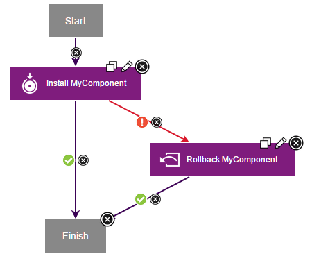

Rolling back components that fail to deploy
If an application process fails to deploy a component, you can add a rollback step to the process to reverse the deployment. In this case, you use the Replace with Last Deployed option.
For a video demonstration of rolling back components, see Rollback Scenarios in IBM UrbanCode™ Deploy.
To roll back a component in this way, you add a step in the application process that runs if the component is not deployed. This Rollback Component step with the Replace with Last Deployed option redeploys the previously installed component version. The specified inventory still shows the new version and that the environment is noncompliant because the deployment of that version failed.
This method works best if you want to roll back a component within the same application process that attempted to deploy it. For example, you can install a component, run tests on it, and if the tests fail, roll back the component.
If the component is already installed and you want to switch to a different version, you can do one of these procedures:
- Install the new component version over the existing component version.
-
Use the uninstall process for the component to remove the unwanted version.
Create a rollback process that uses the Remove Undesired Incremental Versions option to roll back to a snapshot. See Rolling back to a snapshot.
-
In an application process, add a step to deploy a component version as usual.
- In the process, add a Rollback Component step.
-
In the Rollback Component step, specify the following information:
-
*Component*
Specify the component to roll back.
-
*Component process*
Specify the process to run on the previously deployed version. In most cases, specify the deployment process for the component.
-
*Rolback Type*
Select Replace with Last Deployed.
-
-
Set a failure link from the deployment step to the rollback step so that the rollback step runs only if the deployment fails.
Assume that version 1 of a component is deployed to an environment. You want to install version 2, but if that installation fails, you want to roll back to version 1. The application process looks like the following example. In this application process, the first step deploys the component version as usual. If that step fails, the rollback step runs with the Replace with Last Deployed option. In this case, the rollback step deploys version 1, which is the version that was in the inventory before the process started. However, the inventory is still noncompliant because you tried to deploy version 2 and failed.

Parent topic: Application processes